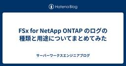
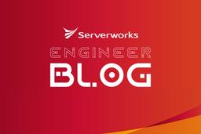
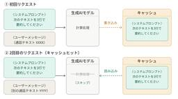
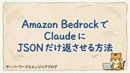
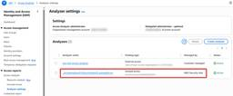
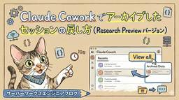
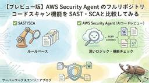

サーバーワークスエンジニアブログ
https://blog.serverworks.co.jp/
クラウド専業インテグレーター・サーバーワークスの中の人があらゆる技術についてお届けします。
フィード

FSx for NetApp ONTAP のログの種類と用途についてまとめてみた
サーバーワークスエンジニアブログ
はじめに FSx for NetApp ONTAP では、ONTAP 側で取得可能なログとして4種類が存在します。 各ログの概要と用途についてまとめてみました。 FSx for NetApp ONTAP のログ種別 1. ONTAP 管理監査ログ 用途 CLI・REST API・ONTAPI 経由で実行された管理操作を記録するログです。 ボリュームの作成・削除、設定変更、ユーザー管理など、管理者が行った操作証跡を残します。 2. ファイルアクセス監査ログ 用途 SMB/NFS 経由でのユーザーによるファイル・ディレクトリ操作を記録するログです。 ファイルの作成・読取・書込・削除・権限変更・ログ…
1日前

Amazon BedrockでAIモデルのパラメータ検証していたらカップラーメンが破壊されるとか言ってきた
サーバーワークスエンジニアブログ
今回のブログでは、Amazon Bedrock の Playground で Amazon Nova Lite 1.0 に同じプロンプトを投げ、温度（Temperature） だけを変えて出力がどう変わるかを実際に試した結果を共有します。AWS Certified AI Practitioner（AIF-C01）の試験対策の一環で実際に触ってみたことをまとめた内容になります。 用語解説 温度（Temperature） トップP（Top P） トップK（Top K） 検証の前提 検証準備 Amazon Bedrock の Playground を開く モデルを選択する パラメータ設定パネルを開く…
2日前

Claude のプロンプトキャッシュの勘所と実プロジェクトでのコスト削減効果
サーバーワークスエンジニアブログ
サーバーワークスの村上です。 当社ではお客様の Claude を使った業務効率化の支援を行っています。このブログでは支援の中で活用することが多いプロンプトキャッシュについて、実プロジェクトでの例を交えながらご紹介します。 プロンプトキャッシュとは 料金 損益分岐点 キャッシュなしの場合 キャッシュあり（有効期限 5 分）の場合 キャッシュあり（有効期限 1 時間）の場合 コスト削減率はキャッシュ可能な割合に応じて変動する シナリオ A：キャッシュ可能比率が高い場合 シナリオ B：キャッシュ可能比率が中程度の場合 実際のプロジェクトでどれだけコスト削減できたか キャッシュをより深く知る キャッシ…
3日前

Claude Opus 4.8 リリース！コーディング性能向上・Claude Code並列ワークフロー対応 3
3
サーバーワークスエンジニアブログ
はじめに サーバーワークスの池田です。 2026年5月28日、Anthropic が Claude Opus シリーズの最新版 Claude Opus 4.8 をリリースしました。前モデルの Opus 4.7 から2か月足らずでの登場で、価格は据え置きのまま全ベンチマークで 4.7 を上回る主力アップデートです。 本記事では、Anthropic の公式発表と移行ガイドをもとに、Opus 4.8 が「モデルとして何が変わったのか」を読み解きます。コーディング性能の伸び、自己検証能力の向上、そして同時に発表された Claude Code の並列ワークフロー機能までを、4.7 との比較を交えてまとめ…
3日前

Amazon Bedrock で Claude に JSON だけ返させる方法
サーバーワークスエンジニアブログ
Amazon Bedrock で Claude に JSON だけ返させる方法 こんにちは、サーバーワークスで生成AIの活用推進を担当している針生です。 Amazon Bedrock 経由で Claude を使って JSON を生成するとき、レスポンスに余計な説明文やマークダウンが混ざって困った経験はないでしょうか。Bedrock の Converse API には outputConfig パラメータがあり、JSON Schema を渡すことで API レベルでスキーマへの準拠が保証されます。 問題：デフォルトでは余計なものが返ってくる AWS EventBridge のルールを JSON …
4日前
【Amazon CloudWatchアラーム】EC2インスタンスタイプを変更した場合の注意点 1
サーバーワークスエンジニアブログ
こんにちは。 クロスインダストリー第１本部クラウドコンサルティング２課の古屋です。 EC2インスタンスのスペックアップやコスト削減のためにインスタンスタイプを変更した際、それまで正常に動いていたAmazon CloudWatch アラーム（以下、CloudWatchアラーム）が突然「データ不足」になってしまった、、、という経験はありませんか？ 「インスタンスタイプを変更しただけなのになぜ？」と疑問に思う方も多いはずです。 今回は、この事象がなぜ起こるのか、そしてどのように解決すればよいのかを解説していきます。 対象 結論 事象：インスタンスタイプ変更後「データ不足」になる 原因：メトリクスを識…
4日前
Amazon Aurora + Amazon RDS Proxy でパスワード管理が不要な DB 運用構成を作ってみた 1
サーバーワークスエンジニアブログ
こんにちは。 アプリケーションサービス本部ディベロップメントサービス１課の八鍬です。 Amazon Aurora PostgreSQL + Amazon RDS Proxy の構成で、DB 接続周りのパスワード管理を完全になくし、よりセキュアで運用負荷の低い構成に移行しました。 具体的には以下の 2 つを導入しています。 End-to-End IAM 認証: アプリケーション（AWS Lambda）から Aurora までの全経路を IAM 認証にし、接続用パスワードの管理を不要にする Managed Master User Password: マスターユーザーのパスワードを RDS サービス…
5日前
Claude Code の出力は Markdown から HTML へ ─ Anthropic 公式が方向転換
サーバーワークスエンジニアブログ
はじめに サーバーワークスの池田です。 Anthropic（クロードを開発している会社）の Claude Code チームに所属する Thariq Shihipar 氏が、2026 年 5 月 20 日に Using Claude Code: The Unreasonable Effectiveness of HTML を公開しました。 「人に渡す成果物は Markdown ではなく HTML で出力させた方がよい」という主張です。記事に併せて、20 個のスタンドアロン HTML サンプルを集めた公式ギャラリー thariqs/html-effectiveness も公開されています。 本記事…
6日前

Security Hub Essentials で IAM Access Analyzer Unused Access が自動的に利用可能になりました
サーバーワークスエンジニアブログ
セキュリティサービス部 佐竹です。本ブログでは、新しい AWS Security Hub の Essentials plan で自動的に有効化されるようになった「IAM Access Analyzer Unused Access」について詳細を解説しています。本アップデートにより、これまで単体では高額になりがちだった Unused Access が AWS Security Hub の料金に内包されての提供となる嬉しいアップデートです。
6日前
Claude Code に .env などの機密ファイルを読ませない設定ガイド — permissions と hooks の 2 パターン
サーバーワークスエンジニアブログ
Claude Code に .env などの機密ファイルを読ませない設定ガイド — permissions と hooks の 2 パターン こんにちは、サーバーワークスで生成AIの活用推進を担当している針生です。 本記事では、Claude Code に .env などの機密ファイルを読ませないようにする方法として、2 つのパターンを紹介します。 設定ファイルに拒否ルールを宣言的に書く permissions ツール実行直前にスクリプトを差し込んで判定する hooks それぞれ単体でも使えますが、組み合わせることで多層に守れます。本記事では両方を順に取り上げ、最後に使い分けの目安をまとめます。…
6日前

Claude Cowork でセッションをアーカイブした際の戻し方を検証してみた 1
サーバーワークスエンジニアブログ
はじめに 検証環境 Recents タブのアーカイブ機能とは アーカイブの手順 アーカイブ後の「戻し方」を徹底検証 【以前】UI 上に復元手段が見当たらない 【現在確認できた方法】「View all」ボタンから UI で復元可能 現時点でできる対応策 方法 1：[uuid].json を編集してデスクトップアプリを再起動 方法 2：アーカイブされたチャットセッションに会話を再開する まとめ おわりに はじめに Anthropic が提供する Claude Cowork（現在 Research Preview 中）は、デスクトップアプリ上で Claude と連携しながらタスクを自動化・実行できる…
6日前
Amazon Bedrock AgentCore を一から触ってみる
サーバーワークスエンジニアブログ
はじめに 今回作るもの 検証環境 手順 1. AgentCore CLIのインストール 2. プロジェクト作成 3. エージェントコードの作成 4. Dockerfileの作成 5. ローカルテスト 6. デプロイ 7. 呼び出しと動作確認 8. Observability（トレース確認） 9. Gateway でジオコーディングAPIを接続 @tool と Gateway の使い分け Bedrock Agents との比較 ハマったポイント CodeZipデプロイの初期化タイムアウト Containerデプロイでのトレース設定 まとめ はじめに こんにちは、アプリケーションサービス本部ディベ…
7日前
Amazon Bedrock Agents を触ってみる 1
サーバーワークスエンジニアブログ
はじめに 今回作るもの アーキテクチャ 前提条件 Bedrock Agents の仕組み 全体の流れ アクショングループとは 処理の流れ 手順 1. Lambda関数の作成 Lambda単体テスト 2. Bedrock Agent の作成 モデルと指示文の設定 アクショングループの追加 3. Lambda のリソースベースポリシー設定 4. テスト 5. エイリアス作成とAPIからの呼び出し 必要なIDの確認 Python（boto3）での呼び出し まとめ はじめに こんにちは、アプリケーションサービス本部ディベロップメントサービス3課の北出です。 最近、AIエージェントという言葉をよく耳にす…
7日前
Claude Code更新 usage内訳・modelセッション単位・agents定着【5/17〜23】
サーバーワークスエンジニアブログ
はじめに サーバーワークスの池田です。 今週（5/17〜5/23）の Claude Code は v2.1.144 から v2.1.150 まで6バージョンがリリースされました（v2.1.146 は公式 CHANGELOG に記載のない欠番です）。大型の新機能というより、バグ修正と既存機能の安定化が主役の1週間でした。 そのなかでも、日々の運用に効く変更が3点あります。いずれも派手さはないものの、毎日触る部分の挙動が変わるため影響範囲は広いです。 /usage の項目別内訳（v2.1.149）: 利用上限を何が消費しているかを skills・subagents・plugins・MCP サーバー…
7日前

【プレビュー版】AWS Security Agent のフルリポジトリコードスキャン機能をSAST・SCAと比較してみる
サーバーワークスエンジニアブログ
こんにちは。 アプリケーションサービス本部、DevOps担当の兼安です。 5月中旬にAWS Security Agent（以降、Security Agentと記載）の新しい機能、リポジトリ全体のコードレビューが発表されました。 aws.amazon.com Security Agentは以前からプルリクエストに対してはコードレビューができていましたが、今回のアップデートで、リポジトリ全体に対してコードレビューができるようになりました。 今回はこの新機能を試してみます。 同機能は、本記事執筆時点（2026年5月下旬）ではプレビュー版です。 プレビュー版での検証内容であることをご了承ください。 こ…
7日前
【小ネタ】AWS API のアクション名をターミナルから離れずに取得・把握したい 1
サーバーワークスエンジニアブログ
AWS のサービスリファレンス情報（servicereference.us-east-1.amazonaws.com）を活用し、ターミナルから離れずに IAM アクション名や条件キー、ARN フォーマットを取得する方法を紹介。JSON の構造解説とシェル関数による実用例を掲載しました
7日前
Claude Code に "チーム作業" をさせる ー サブエージェントで大規模タスクを分割処理する 1
サーバーワークスエンジニアブログ
Claude Code で長時間・大規模なタスクを効率化するサブエージェント機能を解説します。コンテキストを分離して処理する通常サブエージェントと、会話履歴を丸ごと引き継ぐフォークの2つの起動パターンから、Explore・Plan・General-purpose の組み込みエージェントの使い方、カスタムサブエージェントの作成手順、memory フィールドによる知識の永続化まで、公式ドキュメントをもとに体系的にまとめています。
7日前
Claude Code 大規模コードベース運用のベストプラクティス 1
サーバーワークスエンジニアブログ
はじめに サーバーワークスの池田です。 Anthropic（Claude を開発している会社）が 2026 年 5 月 14 日に How Claude Code works in large codebases: Best practices and where to start を公開しました。数百万行のモノレポや数十年もののレガシーで Claude Code を運用するチームから抽出した、大規模コードベース向けのベストプラクティス集です。 本記事は、 【公式】公式記事の主張を整理したパート 【仕様】公式ドキュメントで挙動を裏取りしたパート 【筆者】実務でどう活かすかを書いたパート の3つ…
8日前

AWS WAF 動的ラベル補間（Dynamic Label Interpolation）の解説とヘッダー・レスポンスへの動的展開を確認してみた
サーバーワークスエンジニアブログ
AWS WAFの『動的ラベル補間』機能詳細。ラベルをヘッダーやレスポンスに動的追加し、アプリケーション連携を向上。AWS CDKサンプルで実動作を確認。
10日前
Amazon Quick の Dataset Q&A + Dataset Enrichment を試してみた
サーバーワークスエンジニアブログ
はじめに 対象読者と前提条件 Dataset Q&A とは Dataset Q&A と Topic Q&A の使い分け やってみる 1. 検証構成の全体像 2. 使用したサンプルデータ 3. Amazon Quick の VPC 接続設定 4. データソースとデータセットの作成 5. Dataset Q&A で質問してみる 6. Explain 機能で生成 SQL を確認 7. Dataset Enrichment の設定 8. Enrichment あり／なしの比較 まとめ 参考資料 はじめに こんにちは。クロスインダストリー第1本部の脇江です。 Amazon Quick は、データ可視化（…
12日前
Kiro IDEからAWS Transformを使って、レガシーなコードをモダナイズをしてみた
サーバーワークスエンジニアブログ
目次 はじめに AWS Transform とは AWS Transform と開発環境の連携が可能になった 今回の検証について 前提条件 注意点 検証の手順 1. AWS Transform の有効化 2. MCP Server の設定と接続確認 3. サンプルコードを Git リポジトリに準備 4. Transform のタスクを実行(Python 3.9 → 3.13 に変換) 5. 結果を確認 料金 料金例 おわりに 参考リンク はじめに AWS Transform とは AWS Transform は、レガシーなシステムやコードをモダナイズし、インフラやアプリケーションの刷新を促進す…
12日前
新しくリリースされた Agent Toolkit for AWS のスキルとプラグインを試してみた
サーバーワークスエンジニアブログ
はじめに Agent Toolkit for AWS の全体像 エージェントスキルとは 「動くこと」と「本番品質」のギャップ スキル = エージェント向けの「社内Wiki」 スキルの構造 スキルの種類 スキルの3つの入手方法 スキルの使われ方 必要なスキルだけを必要なときに読み込む（プログレッシブディスクロージャー） ローカル vs ランタイム検出、どちらを使うべきか（筆者の所感） プラグインとは（Claude Code / Codex 向け） MCP Server とスキルのワンインストールセット 3つのプラグイン プラグインの中身と共有方法 インストール方法 【検証】スキルの効果を試してみ…
13日前
やさしい AIF（ドメイン 5）
サーバーワークスエンジニアブログ
おなかが痛くてもコーヒーは飲む、近藤恭平です。 前回は責任ある AI の原則・バイアス・透明性・人間中心の AI を整理しました。今回は、AI システムを守るためのセキュリティ・ガバナンス・コンプライアンスの実装方法を解説します。試験ガイドのドメイン5に対応した内容です。 AI システムを保護する ここで紹介するサービスは AI システムに限定されない、AWS 上のシステム全般に共通するセキュリティの基盤でもあります。AI の文脈では「トレーニングデータの保護」「モデルへのアクセス制御」「推論ログの監査」といった用途で活用されます。 アクセス制御：IAM と SageMaker Role Ma…
13日前
やさしい AIF（ドメイン 4）
サーバーワークスエンジニアブログ
おなかが痛くてもコーヒーは飲む、近藤恭平です。 前回は基盤モデルを活用したアプリ設計・プロンプトエンジニアリング・ファインチューニングを整理しました。今回は、AI を正しく・安全に使うための責任ある AI（Responsible AI）の考え方と、それを支える AWS サービスを解説します。試験ガイドのドメイン4に対応した内容です。 責任ある AI とは AI システムは「精度が高い」だけでは不十分です。出力が公平か、説明できるか、安全に運用されているか、これらを組織として担保することが求められます。 試験では以下の原則がキーワードとして問われます。 原則 内容 公平性（Fairness） 特…
13日前
やさしい AIF（ドメイン 3）
サーバーワークスエンジニアブログ
おなかが痛くてもコーヒーは飲む、近藤恭平です。 前回は生成 AI の基礎（FM・LLM・トークン・埋め込み・推論パラメータ）を整理しました。今回は、基盤モデルを実際のアプリケーションに活用するための設計・実装・評価に関する知識を整理します。試験ガイドのドメイン3に対応した内容です。 基盤モデルを使ったアプリ設計の考慮事項 FM の特性：大規模・ブラックボックス 深層学習の過程と学習の結果得られる基盤モデル（FM）には、以下の固有の特徴があります。 特性 内容 大規模なコンピューティング要件 FM のトレーニングには多くの GPU リソースと時間が必要。既存の FM をそのまま利用したり、転移学…
13日前
AWS Organizations の SCP における仕様が最大 10 及び 10,240 文字へと緩和されました
サーバーワークスエンジニアブログ
セキュリティサービス部 佐竹です。本日は、AWS Organizations の SCP における制限（SCP アタッチ上限数、SCP 文字数上限）が倍に緩和されたことについて、運用を踏まえてどのような嬉しいことがあるのかをわかりやすく記述します。
13日前
Amazon Bedrock Knowledge Bases の MULTIMODAL 解析で利用可能なモデルを東京リージョンで全網羅検証してみた
サーバーワークスエンジニアブログ
はじめに 結論サマリー 検証環境 検証手順（簡易） 検証結果 Anthropic Claude Amazon Nova / Meta Llama 運用ノウハウ：4つの落とし穴 1. Inference Profile ARN が事実上必須 2. global.* Profile は Marketplace 承認とIAM権限の両方が必要 3. Sync=COMPLETE は成功を保証しない 4. AOSS インデックス伝播は最大2分 クリーンアップ 今後の展望 おわりに はじめに Amazon Bedrock Knowledge Bases（以下KB）の「Advanced Parsing（解析設…
13日前
Claude Code更新 claude agents画面・goalコマンド・Fast mode 4.7化【5/10〜16】
サーバーワークスエンジニアブログ
はじめに サーバーワークスの池田です。 今週（5/10〜5/16）の Claude Code は v2.1.139 から v2.1.143 まで5バージョンがリリースされました。週の頭の v2.1.139 で大きな新機能が2つ同時に投入され、その後の4バージョンはほぼ全部その2機能の安定化に当てられた、という構成の1週間です。注目したいのは次の3点です。 claude agents エージェントビュー（v2.1.139, Research Preview）: バックグラウンドセッションを1画面で見渡すターミナル UI が登場 /goal コマンド（v2.1.139）: 完了条件を1回書けば、C…
14日前
【Kiro・Claude Code・GitHub Copilot Agent Mode】マルチAIコーディングエージェントにおけるファイル読み取り拒否設定の調査（2026年5月時点）
サーバーワークスエンジニアブログ
こんにちは。 アプリケーションサービス本部、DevOps担当の兼安です。 本記事はこちらの記事の続きです。 blog.serverworks.co.jp 前回、マルチAIコーディングエージェントにおける mcp.json の書き方の整理と、APIキーなどの環境変数化を行いました。 今回はそれに加えて、AIが環境変数を読み込まないようにする設定ができるかを調べました。 調査対象は前回同様、Kiro・Claude Code・GitHub Copilot Agent Mode で、Kiro については CLI/IDE の両方を調べています。 本記事のタイトルに「調査」とある通り、残念ながら直接的な読…
14日前
Amazon Quick のチャットエージェントでURLをクリック可能なリンクとして表示する方法
サーバーワークスエンジニアブログ
はじめに こんにちは、久保(賢)です。 Amazon Quick は、組織内外のデータを活用してエージェンティック AI を利用できる、AWS のマネージドサービスです。 Amazon Quick で、組み込みのWeb検索機能ではなく、Brave Search を利用してWeb検索を利用する方法を以下記事にてご紹介しました。 blog.serverworks.co.jp 本記事では、Amazon Quick のチャットエージェントにおいて、AI の回答に含まれる URL をクリック可能なリンクとして表示する設定をご紹介します。 はじめに URLがクリックできないデフォルト動作 URLをクリック…
14日前